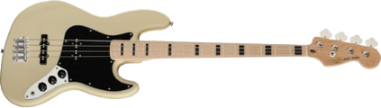
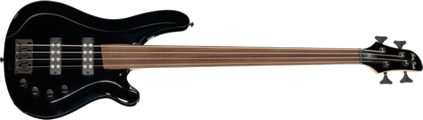

Bass RoutinePour partir d'une autre mesure : arrête la lecture, touche la mesure sur la tab (ou dans la grille), puis Play. Stop garde la mesure jouée ; le petit bouton à gauche de Play revient à la mesure 1. Sur ordinateur, la barre d'espace fait Play / Stop.
Pour travailler quelques mesures en boucle : touche « ▶ Début » puis la première mesure, « Fin ◀ » puis la dernière (✕ efface la boucle). En haut à droite : mesure / temps.
Gammes (et tous les exercices si l'option ⚙️ « Doigtés » est cochée) : le petit chiffre à côté de la case est le doigt (1 index, 2 majeur, 3 annulaire, 4 auriculaire, 0 corde à vide).
Sur iPhone : si tu n'entends rien, vérifie le bouton silencieux et le volume.
© 2026 FredLatorche · v6.0 · à propos de Bass Routine